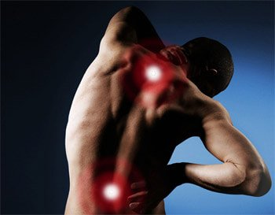
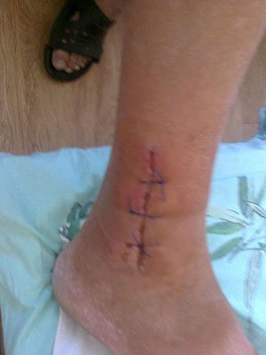
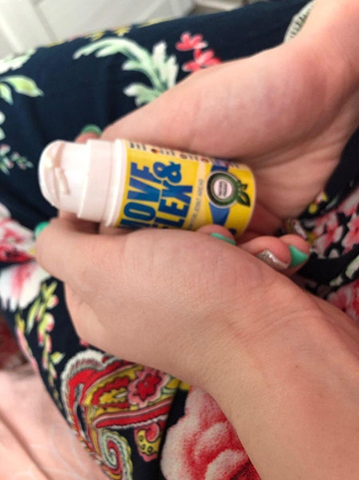

Jak se zbavit bolesti kloubů
Chci vám povyprávět příběh o tom, jak jsem se zbavil artrózy v kolenních kloubech a osteochondrózy v bedrech. Nejsem lékař, takže vám nevysvětlím, jak jsem se vyléčil, ale řeknu vám, co se stalo.
Je mi 56 let a jsem důchodce. Před důchodem jsem pracoval ve spalovně výrobny kovu. Nejprve jsem byl obyčejný pracovník a později jsem povýšil na inženýra bezpečnosti. Ti, kteří znají práci se spalovacími pecemi rozhodně vědí, že se to od běžné práce s kovem liší. V běžných kovozávodech pouze vaří ocel a stačí jen sedět a mačkat páky a tlačítka. My jsme ale dělali všechno staromódně. Když to bylo nutné, používali jsme lopatu a někdy i páčidlo. Poblíž pecí bylo velké horko a nebylo kam utéct před neustálým suchem. Zničil jsem si tam kolena a bedra.
Neustálé bolesti měly negativní dopad na můj vzhled. Za poslední 3 roky jsem hodně zestárnul.
Je skvělé, že jsem měl právo odejít v 50 letech do důchodu, protože jsem pracoval se škodlivými látkami. Neměl jsem ale sílu to zvládnout. Poslední rok jsem vydržel pouze díky anestetickým injekcím. Měl jsem štěstí - uvolnila se pozice pro inženýra. Nová práce byla mnohem jednodušší a nemusel jsem trávit čas u pecí. Šetřil jsem své zdraví a nemoci se mi spravily. Bolesti ustoupily a chvíli jsem mohl fungovat i bez anestetik. Tři roky před odchodem do finálního důchodu jsem ale měl nehodu. Zranil jsem si nohu, když jsem byl rybařit. Bolest a další kolo anestetik ovlivnily moji špatnou rovnováhu a začal jsem trpět ostrými bolestmi v kolenou a bedrech.

Kvůli tomuto zranění se mi moje artritida začala rychle zhoršovat.
Ani si nechci na tyto roky vzpomínat. Bylo to peklo na zemi! Ráno mi moje žena dala injekci diclofenacu, potom jsem si v práci musel dát další a večer doma mi žena dala ještě jednu. Ptáte se, proč jsem nešel do důchodu? Pomáhal jsem svému synovi. Měl doma novorozené dítě a přišel o svoji práci. Musel jsem jeho rodině pomáhat.
Poslední rok jsem chodil s hůlkou. Před posledním pracovním vyšetřením jsem napsal dobrovolnou rezignaci. Stejně bych vyšetřením neprošel.
Jak jsem se vyléčil
Na základě mých bohatých zkušeností s nemocemi kloubů mohu říct, že lékaři znají v podstatě pouze chondrosamin. Možná vám někdy předepíšou také hydrokortizon nebo diprospan.
Tyto léky vám NEPOMOHOU!
Kromě toho neustálé injekce diclofenacu, které jsem musel brát na bolest, mi způsobily žaludeční bolesti. Musel jsem brát bizmut, abych si ochránil žaludek.
Hledal jsem skutečně efektivní lék a tou dobou jsem musel podstoupit čtyři punkce pro odstranění tekutiny. Naposledy to už byl jen hnis. Lékaři mi řekli, že pravděpodobně budu muset jít brzy na operaci a dají mi náhradu kloubu. Místo kolenních kloubů by mi dali titanové klouby. Začal jsem si o tom zjišťovat více. Jak se ukázalo, i kdyby tyto umělé klouby byly v pořádku, musel bych stále chodit o hůlce. Operace stála minimálně 80.000 Kč. Taková je cena za protézy v Německu, u nás jsou o 20.000 levnější, ale riziko komplikací je velmi vysoké. Rozhodl jsem se si to pořádně promyslet.
Rozhodl jsem se pořádně si svůj budoucí osud promyslet.
Viděl jsem, že se nemám jak vyhnout nemohoucnosti. A na operaci jsem ani neměl peníze!
S mojí ženou jsme nad tím hodně přemýšleli (brala to skvěle) a rozhodli jsme se, že operaci podstoupím. Život nekončí v 61 letech a co se týče peněz... jsou přece na utrácení.
A v tu ránu se stal zázrak!
Může za to moje žena. Jedna její kamarádka ze školy, manželka úředníka z našeho města, jí řekla, že její manžel trpěl bolestí kolen stejně jako já - no, možná ne tak moc.
Jednoho dne moje žena šla po ulici a vedle ní zastavilo auto. Tento úředník vystoupil a lehkým krokem ji oběhl a šel do obchodu.
Ten samý den Sandra (moje žena) zavolala své kamarádce a začala se jí vyptávat, jak si Jiří vyléčil svoje kolena. Nešel na operaci, to jsme věděli. A kromě toho, lidé po operacích takto rozhodně neběhají.

Moje žena Sandra mě zachránila, jsem jí velmi vděčný.
Ukázalo se, že šlo o nový produkt - Move&Flex. Její manžel zatahal za nitky a za necelý měsíc se postavil opět na nohy. Řeknu to ještě jednou - ZA MĚSÍC!
Oba jsme byli velmi frustrovaní a zároveň vzrušení. Tento produkt se v naší zemi neprodával. Neměli jsme ani páru, kde si ho můžeme objednat u nás, kde je téměř vše na předpis. Prostě jsme se stále připravovali na to, že půjdu na operaci.
O měsíc a půl později Sandře zavolala její kamarádka a řekla jí, že Move&Flex prošel certifikací v naší zemi. Moje manželka kamarádku prosila o více informací a je to opravdu tak! Nyní si můžeme tento produkt koupit, ale zatím bohužel jen na internetu. Myslím, že jsem byl jedním z prvních lidí, kteří si tento produkt u nás koupili!
Move&Flex
Začal jsem si léčit svoje kolena a bedra. A ono to fungovalo! Nejprve jsem si myslel, že je to anestetikum, protože po 5-10 minutách od aplikace mě přešla bolest. Cítil jsem se mnohem lépe, dokonce mě přestala bolet bedra. Popravdě jsem to vzdal už velmi dávno. Přál jsem si, aby se mi zlepšila alespoň kolena. Už jsem se připravoval na operaci! Po týdnu používání tohoto produktu jsem si ale dokázal obout boty bez použití metrové lžíce a uvědomil jsem si, že Move&Flex skutečně dobře LÉČÍ!
Za 2 týdny jsem vydržel půl hodiny chodit bez bolesti v kolenou! Opravdu jsem se postupně léčil! O další dva týdny později jsem se už považoval za zdravého člověka - netrpěl jsem žádnými bolestmi! Mohl jsem se ohýbat, chodit na delší vzdálenosti a jezdit na kole (miluji jízdu na kole).
Mohl jsem jezdit na kole a chodit na dvouhodinové procházky.
Už je to půl roku, co jsem se uzdravil. Už žádné bolesti! Bez ohledu na to, že jsem Move&Flex přestal používat už před několika měsíci. Nyní chodím na ryby, pracuji na zahradě a hlídám svého vnuka! Se ženou se plánujeme vydat na dovolenou, stále o tom mluví.
Když jste zdraví, můžete si hrát se svými vnoučaty a dělá vám to radost, místo aby vás to bolelo.
Pokud tedy máte artritidu, osteochondrózu nebo artrózu, jednoduše pokud vás bolí klouby a záda, zapamatujte si toto: Move&Flex - léčí klouby!
Jan Valenta, Brno
Používám Move&Flex dva týdny. S výsledky jsem moc spokojená. Kvůli osteochondróze jsem se vůbec nedostala ven. Tento balzám je velmi účinný. Nanáším si ho na postižená místa a vždycky na ně zapomenu až do druhého dne. Jednou jsem měla ostrou bolest v bedrech a Move&Flex mě jí zbavil za 5 minut!
